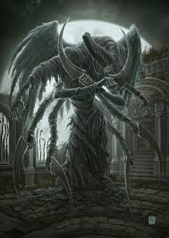

El Origen de la Plaga y la Ciudad de Yharnam
Bloodborne es un juego oscuro y lleno de misterio que se desarrolla en la ciudad de Yharnam, una ciudad plagada por una enfermedad transformadora conocida como "La Plaga". Esta plaga convierte a sus habitantes en monstruos sedientos de sangre, y el jugador asume el papel de un cazador que debe enfrentarse a las criaturas de la noche y desentrañar los secretos detrás de la enfermedad.

La ciudad de Yharnam, afectada por la plaga que convierte a sus habitantes en monstruos.
El Pacto con Gehrman y el Inicio de la Caza
El protagonista, conocido como el Cazador, llega a Yharnam en busca de una cura para la plaga que lo aqueja. Pronto se encuentra con Gehrman, el líder de los cazadores, quien lo instruye en el arte de la caza y le encomienda erradicar a las criaturas infectadas. A través de sus misiones, el cazador va descubriendo secretos oscuros que vinculan la plaga con una antigua entidad cósmica.
Gehrman, quien guía al cazador en su lucha contra la plaga y los monstruos de Yharnam.
Los Grandes y la Influencia Cósmica
La historia de Bloodborne está marcada por la intervención de los Grandes, seres cósmicos de inmenso poder que influyen en los eventos del mundo. Estos seres, que no pueden ser comprendidos por los mortales, son la fuente de la plaga que asola Yharnam y han manipulado a la humanidad durante siglos. El cazador descubre que su misión no es solo cazar monstruos, sino enfrentarse a estos seres para detener su influencia.
La influencia de los Grandes, seres cósmicos que han corrompido el mundo de Yharnam.
El Final de la Caza y la Decisión del Cazador
Tras enfrentarse a las criaturas y descubrir los horrores ocultos, el cazador llega al final de su viaje. Aquí, debe tomar una decisión crucial: seguir luchando para liberar a Yharnam de la plaga o ceder al destino y unirse a los seres cósmicos que han influenciado todo desde las sombras. La historia tiene varios finales, dependiendo de las elecciones del jugador, pero todos ellos giran en torno al sacrificio y la lucha eterna contra la oscuridad.
El cazador enfrentándose a su destino final, donde la decisión marcará el futuro de Yharnam.